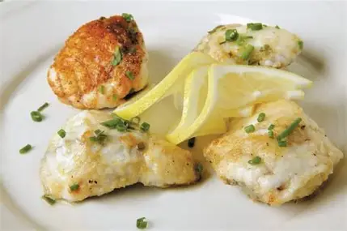

Sea Food Pleasure
Monkfish
Blanc, R. (n.d.). Monkfish with lemon dressing.
Visit Recipe
Recipe 1
Recipe 2
Recipe 3
Recipe 4

Photo by: BBC Good Food
Rate This Recipe
How difficult is this recipe?
Easy
Intermediate
Hard
Conversion
=
Ingredients
4 boneless monkfish medallions (140g each)
1 stalk lemongrass, chopped
4 lime leaves, chopped
1 tsp lemon thyme
5 tbsp olive oil
A handful of arugula leaves
Zest of 2 lemons
25g caster sugar
Equipment
Mixing bowl
Knife & chopping board
Saucepan
Non-stick frying pan
Serving plates
Directions
Marinate monkfish for 6 hours with lemongrass, lime, thyme, and oil.
Prepare lemon dressing by boiling zest and mixing with sugar and oil.
Cook fish 4 minutes per side until golden. Serve with dressing and arugula.